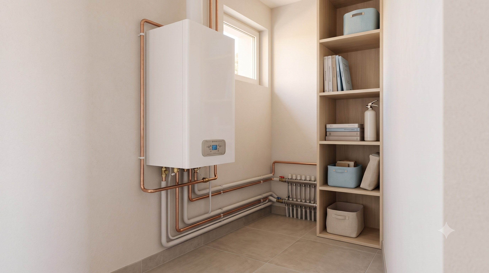

Chauffage · Climatisation
Installation et dépannage de chauffage et de climatisation, autour de Périgueux
Toute notre équipe de chauffagistes professionnels sur Périgueux est à votre disposition pour installer, mettre en service et assurer la maintenance de tous vos systèmes de chauffage, de climatisation ou de plomberie.
Nous étudions préalablement votre projet de rénovation de chauffage et climatisation. Nous vous proposons une installation sur mesure, puis nous vous délivrons un devis gratuit, détaillé et sans engagement.
Notre équipe se déplace dans tout le département de la Dordogne, à Périgueux que vous soyez particulier ou professionnel (commerce, industrie, collectivité…).

Dépannage chauffage toutes marques et SAV sous 48h, en Dordogne
Nous nous déplaçons préalablement à Périgueux pour effectuer un diagnostic gratuit de votre chauffage et vous dépanner au besoin sous 48h.
Nous effectuons par exemple le désembouage, le détartrage ou le nettoyage de vos équipements et système de chauffage.
Votre chauffagiste assure la conformité de ces derniers et effectuons les opérations nécessaires si besoin.
Demandez notre contrat d'entretien annuel pour votre chauffage et climatisation
Nous mettons à votre disposition de nombreux dispositifs de chauffage de qualité ; nous en assurons également un service d'entretien.
Nous nous engageons à effectuer au minimum une visite de contrôle annuelle ; notre chauffagiste vérifie vos installations, répare ou remplace les pièces si nécessaire.
Une entreprise impliquée dans les énergies renouvelables
Certifiée Reconnu Garant de l'Environnement (RGE), notre entreprise REP 24 est soucieuse de la préservation de la planète.
En faisant appel à nos chauffagistes, vous bénéficiez de plus d'un crédit d'impôt et d'aides de l'État, applicables selon la législation en vigueur, pour tous vos travaux de rénovation énergétique.
Pose de climatisations, pompes à chaleur autour de Périgueux
Systèmes de chauffage thermodynamique, les pompes à chaleur pompent les calories qui sont présentes dans l'air ambiant, la terre ou le sol et les transmettent dans les espaces à chauffer. En utilisant une énergie naturelle, ce système de chauffage apparaît comme l'un des plus économique et respectueux de l'environnement.
- Pompes à chaleur à air
- Pompes à chaleur à eau (puisent la chaleur dans les nappes phréatiques)
- Pompes à chaleur géothermiques (puisent la chaleur de la terre)
Nos pompes à chaleurs réversibles font également climatisation et vous permettent de gagner en confort. Elles sont réversibles (produisent du frais en été et du chaud en hiver).
Notre entreprise se charge aussi de la pose et l'entretien de vos réseaux VMC (ventilation mécanique contrôlée). Nos chauffagistes installent et dépannent votre pompe à chaleur et système de climatisation à Périgueux.
Optez pour l'installation de chaudières sur mesure avec nos chauffagistes
La chaudière est un système de chauffage qui produit de la chaleur et de l'eau chaude sanitaire, vous permettant de chauffer la surface de votre habitation ou de votre lieu de travail à Périgueux. Nos chauffagistes assurent la pose de plusieurs systèmes de chauffage :
- Chaudière au fioul
- Brûleur
- Chaudière au gaz
- Chaudière à condensation
Nos plombiers installent votre chauffe-eau électrique, gaz ou thermodynamique
Vous avez fait appel à nos services pour l'installation de votre pompe à chaleur ? Pourquoi ne pas profiter de cette nouvelle source d'énergie pour votre eau chaude sanitaire ?
En remplaçant votre chaudière par un chauffe-eau thermodynamique, vous profitez de l'énergie produite par votre pompe à chaleur pour chauffer toute l'eau dont vous avez besoin au quotidien. Cet équipement est également rattaché au réseau électrique pour compenser les potentiels manques d'énergie.
Nos plombiers réalisent aussi l'installation de modèles de chauffe-eau plus classiques : chauffe-eau électrique ou au gaz. En cumulant nos chauffe-eau à des systèmes de filtration et d'adoucisseurs d'eau, vous profiterez d'équipements sanitaires performants et d'une eau parfaitement saine pour toutes les utilisations.